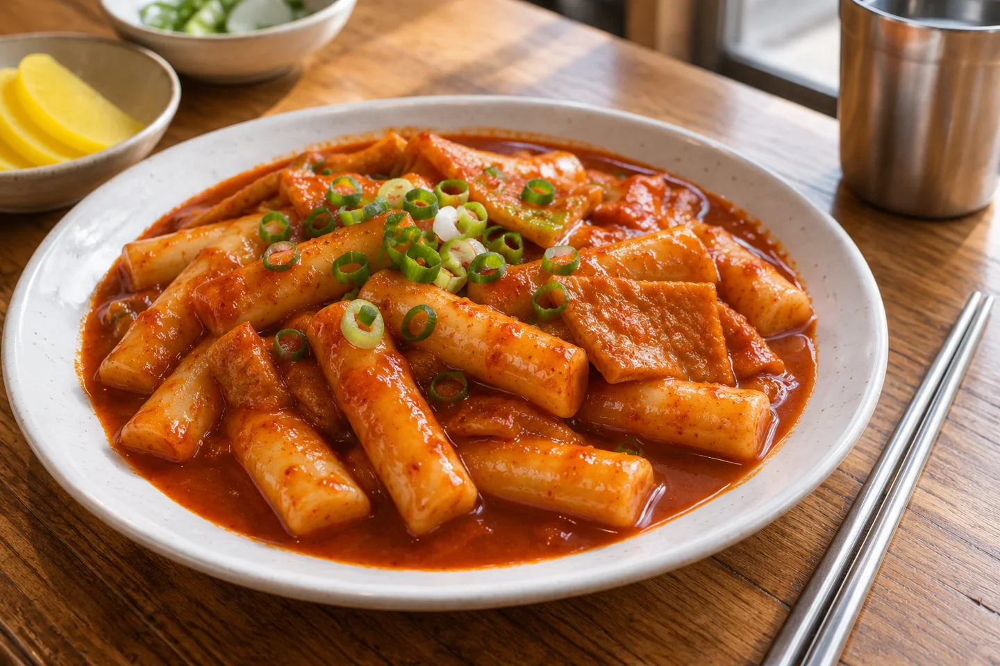
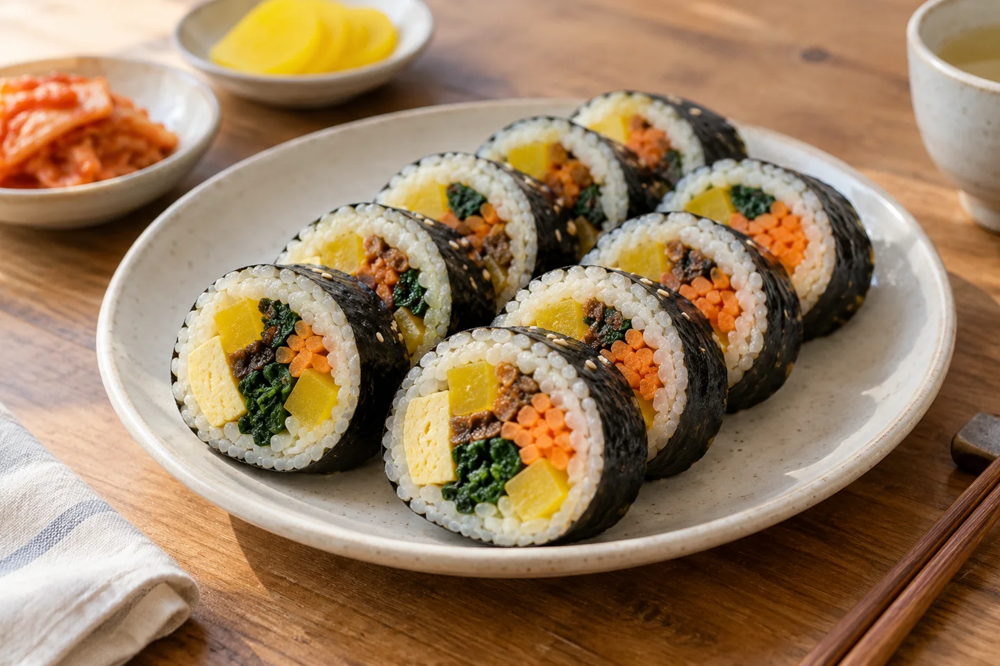
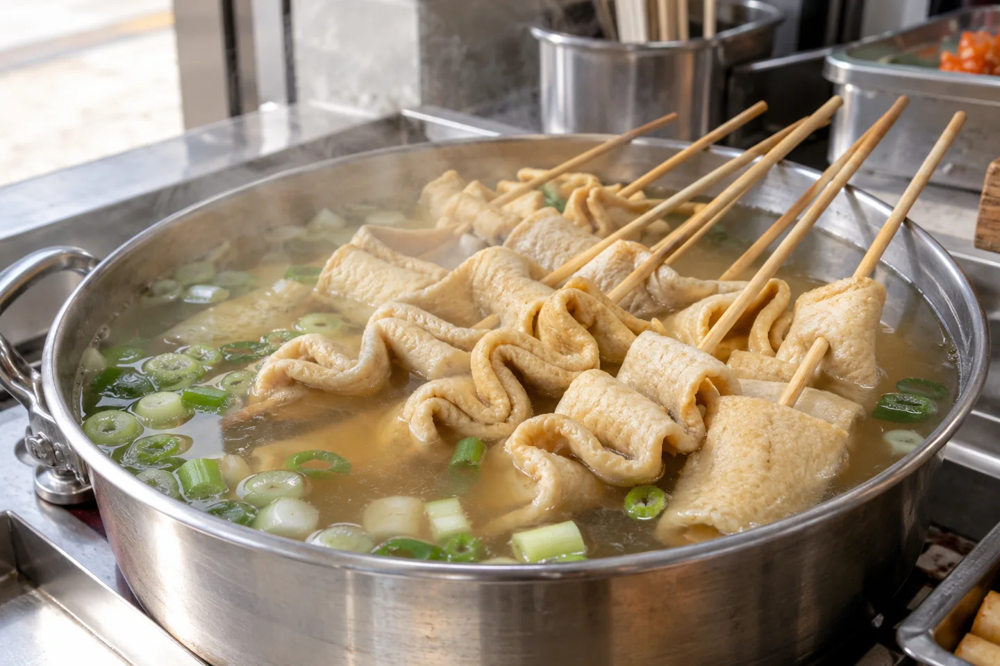
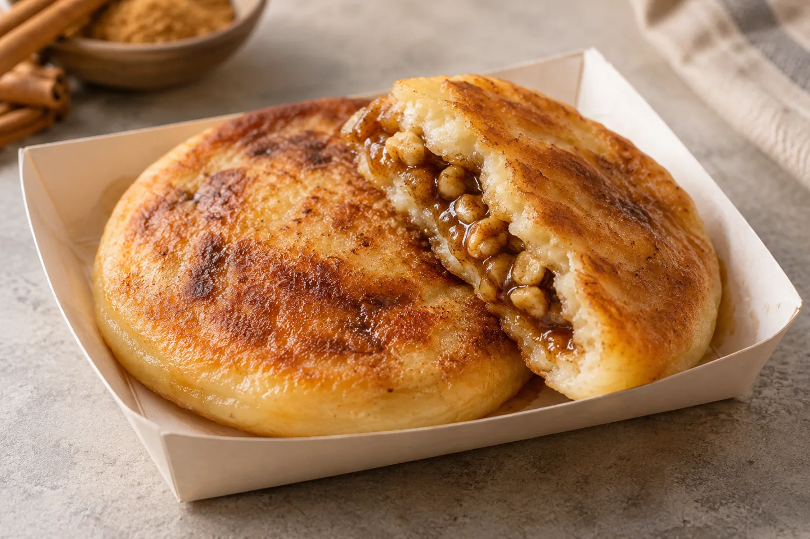

Some of the nicest pauses in a travel day happen over a small plate. You do not need a long restaurant list to begin: learn a few food names, look at what is being prepared, and choose a portion that leaves room for the next discovery.
The Korea Tourism Organization uses bunsik for the simple, convenient meals and snacks that include rice cakes, seaweed rolls, fried foods and fish cakes. You will encounter them in snack shops as well as street-food settings. This guide explains the food; it does not recommend an unvisited shop.
Bunsik & Street Food — Korea Tourism Organization ↗Tteokbokki: start with the sauce.

Tteokbokki (떡볶이) pairs chewy rice cakes with sauce. A familiar version uses red gochujang seasoning, while other versions change the sauce or add ingredients. The rice cakes are the starting point, not a promise that every bowl tastes the same.
If you are unsure about spice, ask before ordering. “Is this spicy?” is 매워요? (maewoyo?). At a counter where the food is already cooked together, a milder portion may not be possible. Begin with a small serving and choose something else if the sauce is not for you.
Gimbap: look inside the roll.

Gimbap (김밥) is rice and fillings rolled in dried seaweed, usually sliced into bite-sized pieces. Fillings vary, so the cross-section is only a first clue. Ask about the actual ingredients rather than assuming every roll matches the picture.
It can be a useful choice for a lunch break between sights. Check whether the shop has seats if you want to rest, and order the quantity you plan to eat. A colorful vegetable-filled roll can still contain egg, meat or other ingredients.
Eomuk: a warm pause at the counter.

Eomuk (어묵) is fish cake. In bunsik settings it is often served on skewers in broth; the tourism organization describes an anchovy-based broth as a common preparation. It is an easy food to recognize once you know the folded shapes.
Before taking a skewer or a cup, ask how ordering and payment work at that counter. Broth and sauces differ by shop. If you avoid fish or have ingredient restrictions, check both the fish cake and the broth.
Hotteok: finish with something sweet.

Hotteok (호떡) is a griddle pancake with a sweet filling, commonly sugar and nuts. It is associated with colder weather, although availability depends on the stall and its menu. Savory variations exist too, so read the name before choosing.
Give a freshly cooked pancake a moment before the first bite: the filling can be very hot. If you cannot eat nuts, do not rely on the outside appearance. Ask about the filling and preparation.
Make the food stop part of your day.
- Look at the posted menu and confirm the price and portion before ordering.
- Check accepted payment methods rather than assuming every stall takes the same card.
- Keep queues and entrances clear; ask before photographing people or a counter close-up.
- Menus and opening hours vary. Check the individual business on your travel date.
Which would you try first: a spicy plate of rice cakes, a gimbap roll, a warm fish-cake skewer, or a sweet pancake? Choose one, leave time to enjoy it, and let the next stop wait a little.
Food descriptions checked against Korea Tourism Organization information on October 9, 2026; its general bunsik reference was last updated March 24, 2023. No current restaurant price or opening schedule is asserted here. All four images are AI-generated illustrations; ingredients and presentation vary in real dishes.